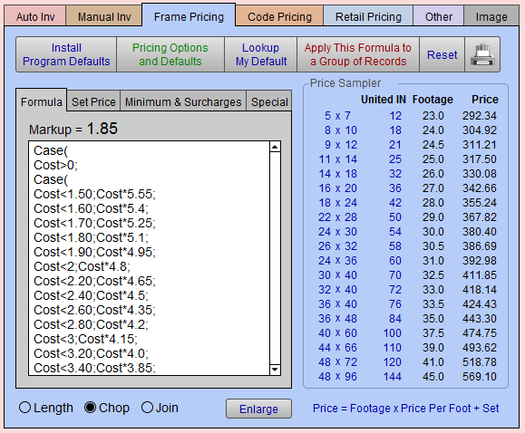
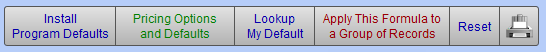
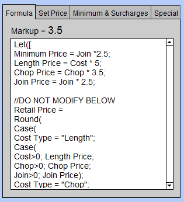
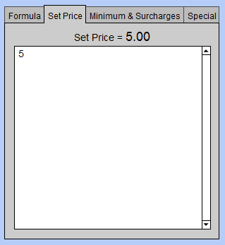
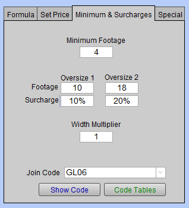
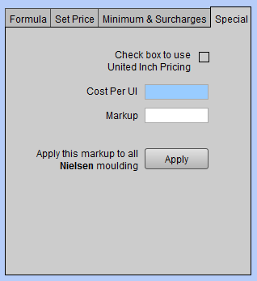
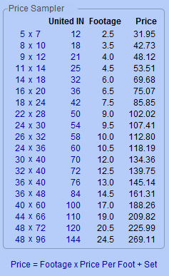

Frame Pricing Tab (for Moulding)
The Frame Pricing tab is used to calculate the retail selling price of your moulding.
There are a number of considerations which go into this calculation:
-
If your vendor provides a length, chop, and join price, which one do you want to use?
-
Do you use a sliding scale markup or is your markup the same for all moulding regardless of the cost?
-
See also: Pricing Moulding By The Linear Foot
Frame Pricing Tab for Moulding Explained


Install Program Defaults Button
-
The Install Program Defaults button finds all moulding records and applies the default formula established by the FrameReady Team.
-
If you are unsure of how to do your pricing or have been experimenting with the pricing and wish to return to the defaults with which FrameReady was set up, then click this button. A warning message appears asking you confirm that you want to perform this action. Click All Moulding or This Record or Cancel.
Pricing Options and Defaults Button
-
The Pricing Options and Defaults button takes you to another screen where you can set up any number of pricing defaults or pricing options.
-
See also: Pricing Options and Defaults Button
Lookup My Default Button
-
Lookup My Default is an easy way to find and enter a pricing default record (that has already been set up in the Pricing Options and Defaults screen). Use this feature whenever you enter a new moulding record.
Apply This Formula To A Group of Records Button
-
Once you have entered a formula and set price you can apply it to a group of similar records using the Apply This Formula To A Group of Records button. This takes you to another screen where you can specify the records to which you wish to apply the formula.
Reset Button
-
Updates the Price column data or when there are no values in the Price column.
-
Given the number of moulding and matboard items stored in FrameReady, the Price Sampler data is not auto-calculated. It may need to be refreshed from time to time. Note that Price Sampler data is not used on Work Orders (that data, however, will be fresh).
-
See also: Price Sampler Overview
Printer Icon Button
-
Print the pricing chart for this moulding, or Save as PDF.
Tabs in the Frame Pricing Tab
Formula Tab

Formula Tab is where you enter the calculation you wish to use to determine the retail price per foot of your moulding.
Markup Field
-
The Markup field displays the calculated markup that will be used on the work order to calculate the price of the frame. You cannot enter a value is this field. It is derived from the retail price per foot, which is based on the pricing formula and the Order Type selected for the record.
Note: FrameReady has built in defaults so that if the Order Type selected is Chop, but there is only Length available, then it will default to the Length price.
It is possible to have a formula that calculates the retail price based on the Length and to order by Chop or Join. So, while theMarkup shows a Chop or Join markup, in actuality, the retail price is being calculated by the Length price. -
Use the Length, Chop, and Join radio buttons to specify how you wish to order your moulding. Changing the order or cost type may change the retail price of your moulding depending on the formula used to calculate the price (the FrameReady default formula uses this field as part of the formula).
Enlarge Button
-
When a formula gets too long or you wish to print it out, then use the Enlarge button to "zoom in".
Set Price Tab

Used to enter or calculate a set or fixed price that is added to the retail price of the frame. For example, if your set price is $5.50, then after the frame price is calculated, an additional $5.50 will be added.
See also: What is Set Price?
Set Price Field
-
The Set Price value can be used to cover labor, or shipping, or just to ensure a minimum frame price.
-
Is an optional dollar amount added to the calculated price. It can be based on the formula or just an amount entered into the field.
-
It is a one time dollar value that is applied to each piece sold.
-
The amount in this field will not vary with the amount of stock used.
-
This is an optional field.
Minimum & Surcharge Tab

Some vendors apply surcharges to certain mouldings. Each moulding might have a specific value for which you need to keep track and/or a minimum amount which is required to place an order. This is done in the Frame Pricing tab in Price Codes.
Minimum Footage Field
Enter the minimum footage/meters you will be charged by a vendor for this particular moulding. When this moulding is entered onto a Work Order, and the footage required is less than the minimum, then the retail price will be based on the minimum.
Oversize 1 and Oversize 2 Fields
-
Oversize 1 and Oversize2 Footage: Some vendors have a surcharge when the footage exceeds a certain amount, e.g. 12 feet, after which a percentage is added to the finished frame, e.g. 10%.
Some Vendors may also have a second charge for over a higher amount, e.g. 15 feet, Surcharge: 20%. Enter the amount of Footageas a whole number. -
Oversize 1 and Oversize 2 Surcharge: Enter the Surcharge as a decimal, e.g. .10 = 10%. This amount will be applied for all footage which exceeds the footage value above it.
Width Multiplier Field
-
Width Multiplier: The moulding width multiplier compensates for footage lost when cutting a frame on certain chop saws. The value in this field is multiplied against moulding width, e.g., a 2” moulding times a 1.25 multiplier increases the moulding width to 2 1/2” and the required footage is increased accordingly.
-
This field must always have a value of at least 1 and not exceed 2.
-
This multiplier may be set for each individual moulding or may be set across the board from Main Menu > Work Order > Optionstab > More Options text button > General tab.
-
If you have preset the width multiplier from the Main Menu, changing it here for one moulding will override it.
See also: Moulding Width Multiplier
Ship/Join Code Field
-
Ship/Join Code: New in FrameReady 11
Special Tab

Check box to use United Inch Pricing Checkbox
-
Check Box to use United Inch Pricing: If this box is checked then any other formula for pricing will be overridden.
Cost Per UI Field
-
Cost Per UI: this amount either comes to you from the vendor or you have entered yourself in order to use this method of pricing.
Markup Field
-
Markup: How much you wish to markup the cost per UI.
Appy this Markup... Button
-
Apply this markup to all “vendor” moulding: will apply the markup to all moulding records for this specific vendor.
Price Sampler Section

This section of the screen is known as the Price Sampler.; it may be used as a way to experiment with different formulas or comparing with other price charts.
-
The HxW column displays the size.
-
The UI column displays a number of united inch values (which may be modified for this record).
-
The Footage column displays the calculated footage based on the UI and the width of the moulding.
-
The Price column displays the frame price based on the footage, the price per foot and the added Set Price.
Price = Footage x Price Per Foot + Set Price
© 2023 Adatasol, Inc.